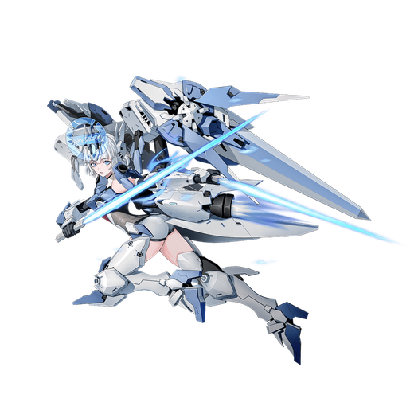

基本データ
- コスト
- 2.5
- 体力
- 未入力
- 赤ロック
- 31
- 動画
- 登録動画

Move Table
| 射撃 | 名称 | 弾数 | 威力 | 備考 |
|---|---|---|---|---|
| メイン射撃 | リストビームガン | 6 | 195 | 3連射可能なビーム |
| Nサブ射撃 | 粒子ミサイル | 2 | - | 378(ビーム) |
| 60(ミサイル) | ビームとミサイルを同時発射する | - | - | |
| 横サブ射撃 | 格闘プログラム-ユニークl | 1 | 324 | 入力方向に移動しつつ スタン属性のサーベル投げ バースト中は誘導切りが付く |
| 後サブ射撃 | 格闘プログラム-ユニークll | - | 324 | |
| 後格闘 | フォーメーション01A | 1 | 419 | アシストが3連射 |
| 覚醒中後格闘 | フォーメーション01A・格闘プログラムⅢ | 1 | 596(D) | 覚醒中1回。突撃→零距離照射 |
| 格闘 | 名称 | 入力 | 弾数 | 威力 | 備考 |
|---|---|---|---|---|---|
| メイン格闘 | 格闘プログラム・メインl | NNN | - | 559[596] | 発生早め バースト中は威力増加 サブ射派生 |
| 格闘プログラム・エクステンド | - | N→サ射 | |||
| NN→サ射 | 578[596] | - | 受け身不能のサマーソルトキック | ヒット時ブーストゲージ回復 5凸時バースト時に使うと回復量増加 サブ格派生 | |
| 格闘プログラム・エクステンドII | - | N→サ格 | |||
| NN→サ格 | 714[760] | - | 斬り払いから3連斬り抜け | バースト中は威力増加 | |
| 横格闘 | 格闘プログラム・メインII | 横NN | - | 534 | 往復斬りから斬り飛ばし。 バースト時は誘導切り サブ射派生 |
| 格闘プログラム・エクステンドⅠ | 横→サ射 | - | 572 | N格闘と同様 出し切りまでの任意段から派生可能 威力表記は3段斬り後 サブ格闘派生 | |
| 格闘プログラム・エクステンドII | 横→サ格 | - | 705 | ||
| 前格闘 | 格闘プログラム・メインIII | 前 | - | 210[660] | 単発斬り抜け バース卜時は6連攻撃に変化 |
| Nサブ格闘 | 格闘プログラム・パワードⅠ | Nサ格 | 1 | 36-341 | 射撃ガード突撃 バースト時は伸び強化 サブ射派生 |
| 格闘プログラム・ユニークIII | Nサ格→サ射 | - | 30-195[264] | ブーメラン 格闘派生 | |
| 格闘プログラム・エクステンドIII | Nサ格→メ格 | - | 402 | Nサブ格闘の伸び中から出せるフワ格 格闘派生サブ射派生 | |
| 格闘プログラム・エクステンドⅠ | Nサ格→メ格(1)→Nサ射 | - | 402 | メイン・横格闘と同様の派生 格闘派生サブ格派生 | |
| 格闘プログラム・エクステンドII | Nサ格→メ格(1)→Nサ格 | - | 584 | ||
| 横サブ格闘 | 格闘プログラム・パワードll | 横サ格 | - | 210 | 入力方向に回り込みつつ攻撃 バースト時は誘導切り 格闘派生 |
| 格闘プログラム・エクステンドIII | 横サ格→メ格闘 | - | 522 | 格闘派生{サブ射派生 | |
| 格闘プログラム・エクステンドⅠ | 横サ格→メ格(1)→Nサ射 | - | 522 | 通常格闘と同様 格闘派生{サブ格派生 | |
| 格闘プログラム・エクステンドII | 横サ格→メ格(1)→Nサ格 | - | 648 | ||
| 後サブ格闘 | 格闘プログラム・パワードIII | 後サ格 | 1 | 240[432] | 接地判定ありのピョン格 バースト中は着地時に 衝撃波追加で威力増加&バウンド |
| バーストアタック | 名称 | - | 威力 | ||
| F/B/SMD | - | 備考 | |||
| 爆発技 | 格闘プログラム・ファイナルX | - | 1034/947/860 | 瞬間移動しながらの乱舞格闘 |